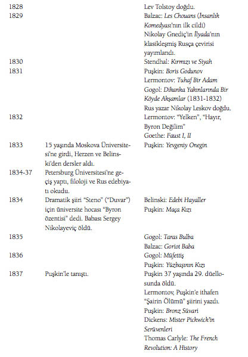
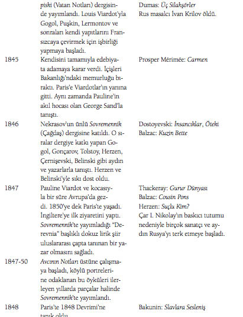

1840’lar ve 1850’ler boyunca Rus entelijansiyasında Slavofil-Batıcı çekişmeleri döndü. Batıcılar Avrupa rasyonalizminin, yurttaşlık anlayışının ve yasalarının Rusya’ya entegrasyonuyla ilerleme fikrini savunuyordu. Slavofillerse, Rusya’nın Batı karşısında manevi ve ahlaki üstünlüğünü öne sürüyor, gelişme ve ilerlemenin Rusya’daki Ortodoks Kilisesi ve köylü komünü (mir) geleneklerini temel alması gerektiğini savunuyorlardı.

Avrupa’da 1848 Devrimleri (Halkların Baharı): Fransa’daki Şubat Devrimi kısa sürede bütün Avrupa’ya yayıldı. Rusya; İngiltere, İspanya, Osmanlı gibi devrimlerden nispeten etkilenmeyen ülkeler arasındaydı.
Marx ve Engels 21 Şubat’ta “Avrupa’da bir hortlak dolaşıyor – Komünizm hortlağı” diye açılan Komünist Parti Manifestosu’nu yayımladı.
Haziran ayında Prag Panslav Kongresi yapıldı. Çeklerin başı çektiği, Rus ve Almanların baskıcı siyasetine karşı olan kongreden Slavların birleşmesine dair kesin bir sonuç çıkmadı. Fakat sonraları Balkanlar’da çıkan milliyetçi bağımsızlık hareketlerinde ve Rusya’nın Panslavist dış politikasında etkili oldu.
Londra’da 1. Büyük Dünya Fuarı gerçekleşti. Camdan ve demirden inşa edilmiş ünlü Kristal Saray’da başta Avrupa ve Amerika’dan gelen son teknolojik yenilikler olmak üzere dünyanın pek çok yerinden kültürel ve endüstriyel ürünler sergilendi.
Petersburg-Moskova demiryolu açıldı.
Fransa’da Louis Napoléon 1851 darbesiyle tahta geçti.
Rus İmparatorluğu ile Osmanlı, Fransa, İngiltere ve Sardinya ittifakı arasında Kırım Savaşı çıktı. Avrupalı güçler, Rusların, zayıflayan Osmanlı İmparatorluğu topraklarındaki ilerleyişini ve Doğu Akdeniz’e hareketini durdurmayı amaçlıyordu.
Baskıcı ve sansürcü politikalarıyla tanınan I. Nikolay öldü. Modernleşme yolunda bir dizi reform başlatacak oğlu II. Alexandr tahta geçti.
Kırım Savaşı sona erdi.
Ruslar Güneydoğu Asya’da kolonici yayılmalara başladı.
İtalya’nın birleşmesinde (Il Risorgimento) büyük rol oynayan Garibaldi ve Binler (i Mille) Fransız yönetimindeki Sicilya’yı ele geçirdi.
Özgürleştirme Reformu’yla yaklaşık 23 milyon serf azat edildi. Serfler artık dava açma, kendi rızalarıyla evlenme, mülk ve kendi işlerini kurma hakkına sahip, yerel seçimlerde oy verebilen özgür vatandaşlar olarak sayılıyordu. Bu nedenle Rusya’da yerel yönetimler kuruldu. Bürokratik kurumlar ve memurlar artmaya başladı. Devlet azat edilen serflerin köy komünlerinden ayrılmasını istemiyordu. Artık lordlara değil, geniş çaplı bir vergilendirme sistemiyle yerel yönetimlere ve bürokratik yasalara tâbi olan köylüleri her ne kadar kölelikten azat etse de refor- mun ne kadar özgürleştirici olduğu tartışma konusuydu.
Köleci Güney eyaletleri ile özgürlükçü Kuzey eyaletleri arasında Amerikan İç Savaşı başladı. Sardinya Kralı Vittorio Emanuele birleşmiş İtalya’nın ilk kralı oldu.
Bismarck, Prusya başbakanı oldu.
1860-1870: Rusya’daki genç aydınlar ve öğrenciler arasında tüm kurumlara ve otoritelere karşı çıkan akılcı ve kuşkucu bir nihilizm felsefesi yaygınlaştı. Turgenyev’in Babalar ve Oğullar’ındaki Bazarov o dönemki nihilist tipini temsil ediyordu.
Ocak Ayaklanması: Kasım Ayaklanması’ndan (1831) beri örgütlenen Lehler, Rus İmparatorluğu’na karşı ayaklandı. Letonya, Litvanya, Belarus ve Ukrayna’nın bir kısmı da mücadeleye katıldı. Ayaklanma 1864’te bastırıldı.
Birinci Enternasyonel kuruldu.
Rusya’da yerel yönetim organları olan Zemstva kuruldu. Ruslar Orta Asya’da kolonici yayılmalara başladı.
ABD’de kölelik kaldırıldı.
Prusya-Avusturya Savaşı.
İngiltere’deki Reform Yasası’yla işçi sınıfı da oy verme hakkına sahip oldu.
1860-1880: Narodnikler (halkın dostları) denen aydınlar, Rusya’da 1861’de serfliğin kaldırılmasıyla köylülerin birçoğunun zengin toprak sahiplerinin (kulaklar) himayesine girmesini, bir kölelik sisteminden başka bir kölelik sistemine geçiş olarak görüyorlardı. Bu dönemde Rusya’da sosyalist düşünce ve devrim fikri tartışılıyordu. Fakat Rusya henüz kapitalist aşamaya geçmediğinden ve dolayısıyla işçi sınıfına sahip olmadığından, Narodnikler devrim potansiyelini köylülerde görüyor, ilerici görmedikleri kapitalist aşamanın atlandığı bir köylü sosyalizmini savunuyorlardı. Aydınların liderliğindeki köylü hareketiyle Çarlık sistemini ve kulakları devirmeyi öngörüyorlardı. Bu amaçla, 1870’lerden itibaren “halka yöneliş” kampanyasını başlatarak taşradaki köylüleri otokrasiye karşı seferber etmek istediler. Fakat orta ve üst sınıftan gelen Narodnikler köylülerle anlaşmakta güçlük çekti ve bekledikleri desteği bulamadılar. Hareketi destekleyenler Çarlık tarafından birçok kez yargılandı ve cezalandırıldı. Narodniklerin açtığı yol 1905 ve 1917 devrimlerinde önemli bir rol oynayacaktı.
Lenin doğdu.
Alman İmparatorluğu’nun ve Üçüncü Fransa Cumhuriyeti’nin kurulmasıyla sonuçlanan Fransa-Prusya Savaşı başladı.
18 Mart’ta Paris Komünü kuruldu, Fransız ordusu 28 Mayıs’ta Komün’ü ortadan kaldırdı.
Osmanlı egemenliğindeki Bulgarlar bağımsızlık için ayaklandılar.
Narodnikler, gizli devrimci örgütleri Toprak ve Hürriyet’i (Zemlya i Volya) kurdu. Osmanlı-Rus Savaşı (93 Harbi) başladı.
Ayastefanos Antlaşması’yla Osmanlı-Rus Savaşı sona erdi.
Bulgaristan, Sırbistan ve Romanya bağımsızlık kazandı. Kafkaslardaki bazı Osmanlı toprakları Rusya’ya bırakıldı.
Avrupalı devletler, Rusya ve Osmanlı arasında Balkanlardaki güç dengesini korumak adına Berlin Antlaşması imzalandı.
Stalin doğdu.
Toprak ve Hürriyet örgütü ikiye ayrıldı: Terörist eylemlerde bulunan ve suikastler gerçekleştiren radikal örgüt Halkın İradesi (Narodnaya Volya); propaganda ve örgütlenme yoluyla köylüler, sonraları da işçiler arasında fikirlerini yaymaya çalışan Ilımlı Kara/Genel Paylaşım (Çornıy Pyeredel).
Daha önce üç kez suikast girişiminden kurtulan Çar II. Aleksandr, Halkın İradesi örgütü üyelerince suikasta uğradı.
Georgi Plehanov’un liderliğinde ilk Marksist Rus devrimci örgüt Cenevre’de kuruldu.